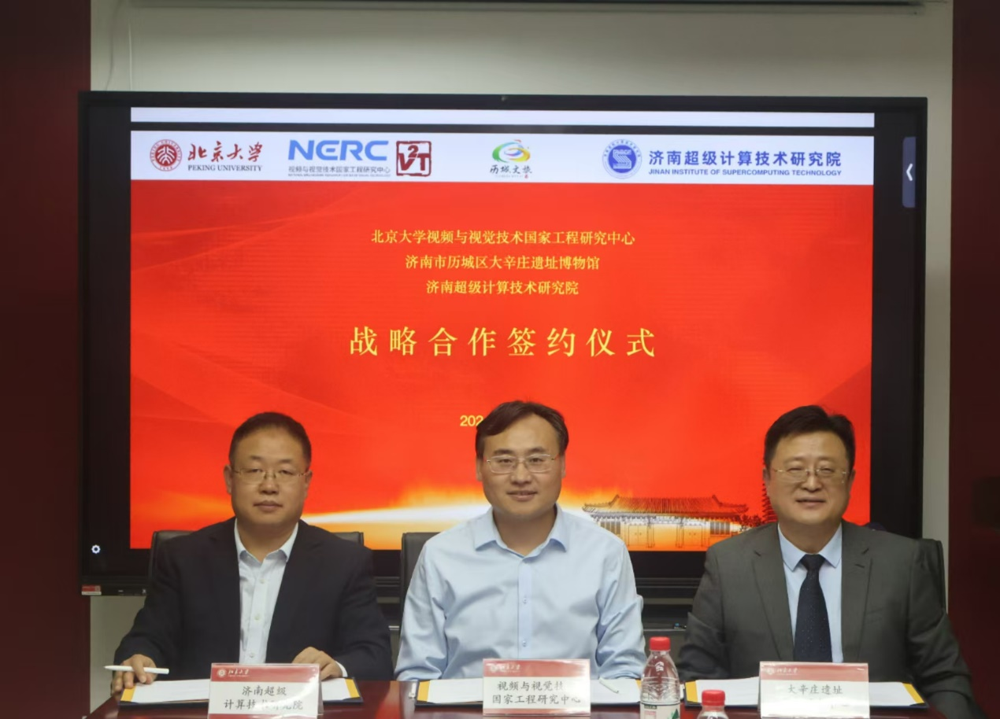
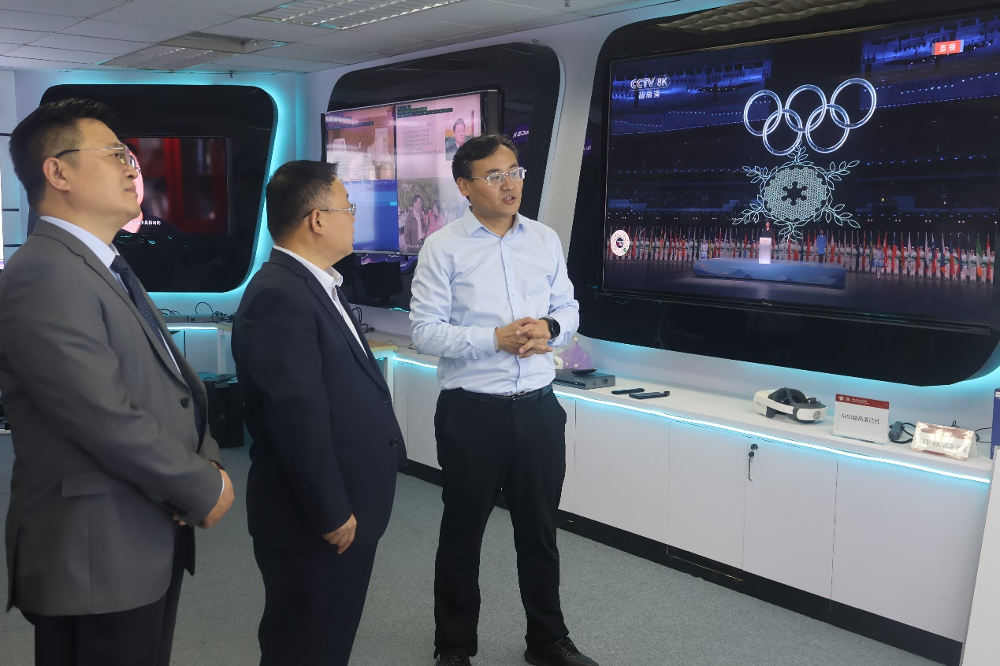
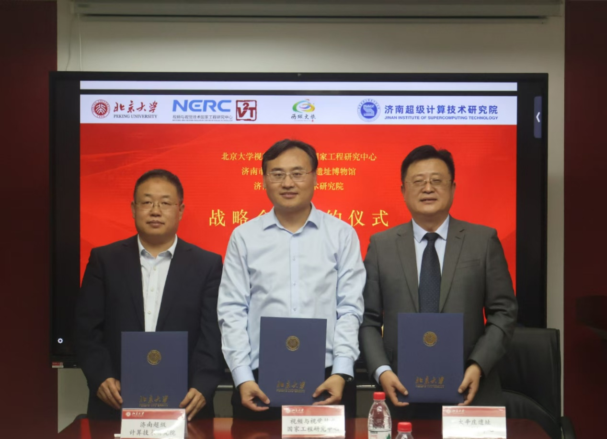
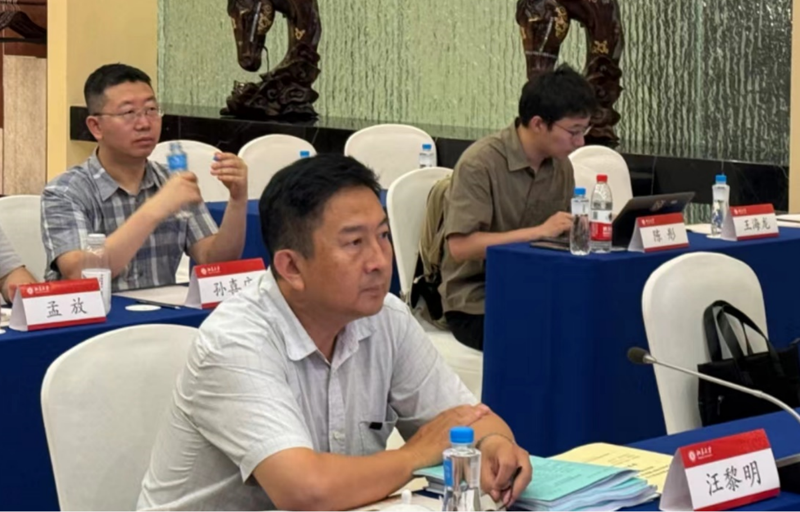
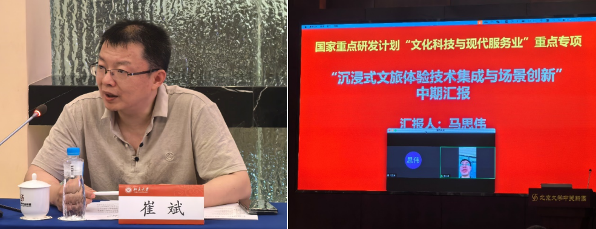
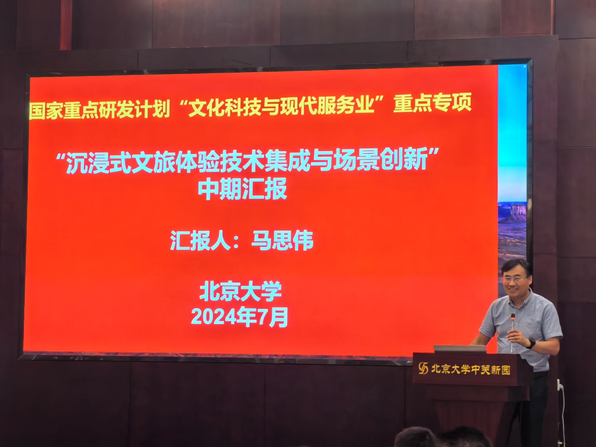
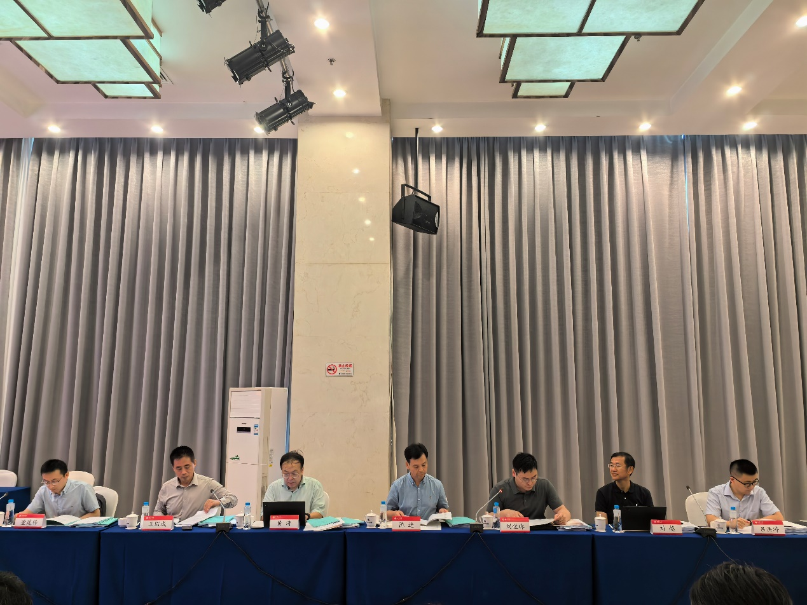
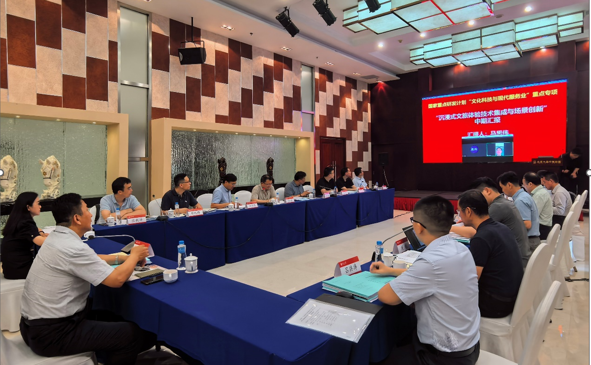

新闻
11月13日，中心与济南超级计算技术研究院、济南市历城区大辛庄遗址管理服务中心（大辛庄遗址博物馆）举行战略合作协议签约仪式，中心副主任马思伟、济南超级计算技术研究院院长潘景山、大辛庄遗址博物馆馆长王传德出席会议。

马思伟教授致辞，介绍了视频与视觉技术国家工程研究中心超高清编解码技术、沉浸式视频技术等突出成果、国家重点研发计划“沉浸式文旅体验技术集成与场景创新”项目以及围绕沉浸式文旅落地的应用示范展示。济南超级计算技术研究院、大辛庄遗址博物馆一行参观了实验室展厅以及CAVE系统全景内容展示，对实验室成果给予高度肯定。

王传德主任致辞，介绍了济南市历城区历史文化遗迹资源以及历史文化遗迹宣传保护情况。大辛庄遗址作为山东省济南市的重要文化遗产，承载着丰富的历史信息和深厚的文化底蕴。这里不仅是中国古代文明的重要发源地之一，也是研究中国古代社会、经济、文化等方面的重要实物资料，保护和传承好这份宝贵的文化遗产具有重要意义。

马思伟教授、潘景山院长、王传德主任代表三方签约战略合作协议，这代表着三方良好合作的开始，中心也将围绕大辛庄遗址博物馆积极开展沉浸式文旅应用示范落地，将沉浸式技术应用于大辛庄遗址的保护、展示和传承中，为大辛庄历史文化的多元化、立体化、沉浸化展示与传承贡献力量。
7月16日，由北京大学牵头的国家重点研发计划“文化科技与现代服务业”重点专项“沉浸式文旅体验技术集成与场景创新”项目中期检查会议在北京大学顺利召开。文化和旅游部科技教育司一级巡视员汪黎明、三级调研员王海琪、国家自然科学基金委高技术研究发展中心现代服务处项目主管刘佐珠、对外经济贸易大学陈进教授、北京理工大学刘越教授、中国科学院软件研究所黄涛研究员、北大科技园有限公司王国成高级工程师、浙江工商大学董建锋研究员、项目负责人北京大学马思伟教授、课题负责人中国传媒大学林卫国教授、苏州创意云网络科技有限公司副总裁穆凯辉及项目骨干等30余人参加了会议。会议由北京大学计算机学院崔斌副院长主持、北京大学科学研究部重大项目办公室廖日坤主任代表学校主管部门参加会议。

高技术研究发展中心项目主管刘佐珠介绍了中期检查工作的总体要求，指出中期检查应准确把握专项项目实施情况，对发现的重要阶段性进展强化推进，对发现问题的项目加强督导，确保专项总体目标实现。崔斌副院长、廖日坤主任代表项目承担单位发言，感谢文旅部和高技术中心的监督与指导，以及专家们长期对项目的关注与支持，承诺将全力支持项目落地实施，做好项目实施的督导和保障工作。

项目汇报及专家研讨环节由专家组组长陈进教授主持。中心副主任、项目负责人马思伟教授围绕项目执行情况、代表性成果、组织实施及经费使用情况等进行了详细汇报。与会专家对项目阶段性研究进展及应用示范工作给予了充分肯定，并就研发过程中需要关注的相关细节给予了具体指导，对项目下一步的工作要点及方向提出宝贵意见和建议，专家组经讨论一致通过本项目中期检查。


文化和旅游部科技教育司汪黎明一级巡视员总结时强调，项目承担单位对项目、课题的组织规范有序，有许多亮点。希望项目组能进一步完善成果证据链，确保与项目指南“文题”一致，同时加强关注市场与应用，推进项目新业态、新消费、新模式落地见效，丰富旅游场景形态，满足人民群众新需求。

此次会议有效检验了“文化科技与现代服务业”重点专项“沉浸式文旅体验技术集成与场景创新”项目的执行情况，梳理项目已达成的重要进展，及时发现项目执行的不足，明确项目下一阶段研究计划及工作重点，将促进项目取得更多显著成果，对加快推进沉浸式文旅项目成果产业化，形成文旅新产业、新消费、新模式起到非常重要的作用。
3月17日上午，国家重点研发计划“文化科技与现代服务业”重点专项“沉浸式文旅体验技术集成与场景创新”项目推进会在南京大学顺利召开。
北京大学马思伟老师主持会议，首先介绍了本项目背景，回顾了项目任务，并展示了河南博物院郑国编钟重建、“火星”沉浸式多模态交互呈现系统、红色主题内容修复、古画动图生成、游客与文物的 3D 融合、《莲鹤方壶》裸眼 3D 显示等前期工作成果。
南京大学陆明、朱昊老师介绍了构建沉浸式多模态交互呈现平台、人脸三维重建、空间光场重建、黄河文化公园场景重建等工作进展情况，并汇报了后续工作计划。
东北大学王昊老师介绍了“激光-可见光-深度”多模态多站点视觉融合方法，通过三维物体表面重建和跨光谱立体匹配，可实现高精度大场景数字孪生。
中国科学院大学张新峰老师介绍了古画肖像口型生成与语音风格转换、游客与文物的 3D 融合与交互等系统建设工作。通过多种沉浸式技术探索与平台建设，优化了河南博物院-郑公大墓出土文物云展览场景，该云展览目前已上线。
中国传媒大学张岳老师介绍了三维全景虚实融合、构建沉浸式质量评价图像序列素材库、设计沉浸式编钟虚拟演奏等工作进展，并对商业模式进行了预估。
中科院计算所席迎来老师提出了基于联合感知的云边端协同、面向异构节点的云边端多维资源联合等优化方法，构建了云边端系统平台等工作进展，并介绍了后续工作计划。
蓝海创意云公司穆凯辉副总裁介绍了黄河、长征等主题应用示范进展情况，总结了与项目相关文旅新趋势、新引擎、新业态、新消费。
专家讨论环节，南京市秦淮区文旅局熊茂林局长指出了文旅发展不均衡的问题，并对项目应用落地提出了颜值、共情、市场三种需要关注的导向。其他参会专家围绕项目也都提出了宝贵意见与想法。
最后，北京大学马思伟老师进行总结。建议项目组成员单位持续关注新消费、新业态，推进产品演示和实际运营，进一步推动文旅产业链的变革、融合和发展。
9月16日上午，国家重点研发计划“文化科技与现代服务业”重点专项“沉浸式文旅体验技术集成与场景创新”项目推进会在苏州创意云网络科技有限公司顺利召开。项目课题组专家以及成员代表共计40人参加了此次会议。
会上，8家相关课题组成员代表就各自单位/团队现阶段的工作内容和进度情况进行了综合性汇报。8名代表分别提出了项目现阶段建设具体进展和措施，明确了计划也表明了决心，将认真落实项目阶段性目标，加快推进重点项目建设。

河南博物院代表就应用示范单位数字化应用现状、发展需求以及对实际工作中存在的问题和瓶颈进行了汇报。

苏州创意云网络科技有限公司穆凯辉详细报告了项目应用示范的整体进展、重点项目的沉浸式体验方案以及项目落地过程中具体的技术需求。南京大学代表就沉浸式多模态与呈现系统、人脸三维重建、文本驱动的人物生成、空间广场重建等技术研发进展进行了汇报。

东北大学代表和中国传媒大学代表就沉浸式内容智能构建与多模态融合技术的整体进展和学术成果进了总结汇报。

北京大学（中国科学院大学）代表就红色人物肖像着色、古画动图生成、历史人物表情生成、6DoF沉浸式展厅、立体式视觉遥现系统等内容进行了汇报。中国科学院计算技术研究所代表就沉浸式内容转换与云边端协同计算技术研究的目标、进展和后续计划进行了汇报。

石家庄铁道大学代表进行了沉浸式长城攀登的演示和应用讲解。

随后，与会专家代表们对项目组上半年的工作进展表示肯定，并就存在的问题提出了建设性的建议，强调了各单位需汇聚目标，按照统一标准和规范推进工作，并从文化产业角度提供了关于项目应用示范的十大场景选择的建议。
会议最后，项目负责人马思伟和课题四负责人穆凯辉对项目应用示范工作中的问题和初步改进措施进行了总结性发言。通过本次项目推进会，课题组参会人员了解了“沉浸式文旅体验技术集成与场景创新”项目最新研究进展。同时，各位与会专家的研究展望与构想也让参会人员开阔了思路。
3月23日，国家重点研发计划“文化科技与现代服务业”重点专项“沉浸式文旅体验技术集成与场景创新”项目启动会暨实施方案论证会在北京大学英杰交流中心顺利召开。
国家重点研发计划“文化科技与现代服务业”重点专项的总体目标是：面向文化科技与现代服务业生态集聚的新趋势、服务消费升级的新需求和服务场景创新的新特征，结合文化科技与现代服务业数字化、专业化、智能化和生态化的发展趋势，系统布局共性基础技术研究，媒体融合、数字文化、文旅融合、文化遗产保护等文化科技场景服务技术创新与应用，生活服务、科技服务、生产服务等现代服务业场景服务技术创新与应用，促进文化产业数字化转型升级，提升国家文化软实力；支撑现代服务业健康快速发展，培育经济发展新动能。
会议旨在充分听取领域各方专家意见，发挥北京大学作为项目牵头单位的核心作用，全力完成项目研发任务。
主管单位领导包括科技部高技术研究发展中心张金国处长，科技部高技术研究发展中心陈立明项目主管。项目专家组由中国科学院自动化研究所张树武研究员，北京理工大学刘越教授，清华大学刘烨斌教授，中国移动咪咕公司EVP李琳，北京航空航天大学徐迈教授，中国艺术科技研究所数字艺术部张宜春主任和财务专家组成。
本次会议由北京大学计算机学院副院长崔斌主持，北京大学科研部副部长张琰代表项目承担单位发言，对科技部对北京大学的支持和指导表示感谢，并承诺将对项目给予全力支持，做好项目实施的督导和保障工作。科技部高技术研究发展中心张金国处长简要介绍了高技术中心的业务管理内容，宣讲了重点研发项目的管理要求。对本项目的先进性，变革性提出要求。强调项目要为我国文旅业发展提供有力的技术支撑，培育出新的经济增长点。
项目实施方案咨询环节由刘越教授主持。项目负责人马思伟教授对项目研究任务的背景与意义、研究内容和技术路线、任务分解和实施计划、考核指标和预期成果等方面进行了详细汇报。专家组听取汇报后，充分肯定了项目组的实施计划，对方案的多个细节提供了宝贵的意见和建议。重点对沉浸式关键技术在文旅场景应用及市场推广、项目技术集成和场景创新方案、技术链条以及展示效果等方面给出了具体的指导性建议。尤其针对应用示范项目如何聚焦到特定的场景给予了重要指导，进一步强调了本项目的定位、内涵、外延。同时，财务专家对项目经费政策进行了宣讲，并对预算的规范执行提出了建议。
北京大学科研部重大项目办廖日坤主任、河南省博物院翟红志副院长等单位领导及各课题负责人、项目参与单位中国科学院大学、中国科学院计算技术研究所、东北大学、石家庄铁道大学、遵义会议纪念馆等单位相关领导和课题组成员参加了本次启动会。